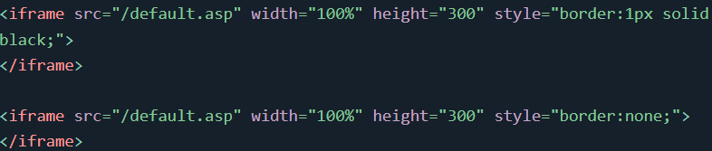
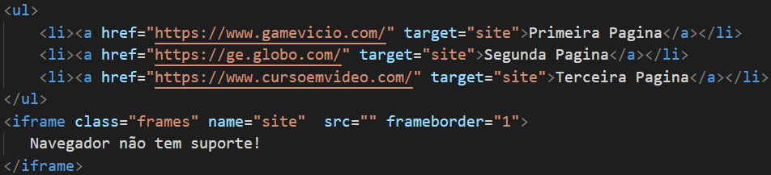
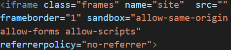

Definição e Uso
A iframe tag especifica um quadro embutido.
Um quadro embutido é usado para incorporar outro documento no documento HTML atual.
Dica: Use CSS para estilizar iframe
Dica: É uma boa prática sempre incluir um atributo de título para o arquivo iframe. Isso é usado por leitores de tela para ler qual é o conteúdo do iframe.

Para utilizar sites diferentes em um so iframe e preciso que a ancora tenha uma target com o mesmo nome que o name criado em iframe
Para deixar o iframe maais seguro e importante colocar sandbox e um referrerpolicy como no exemplo:
